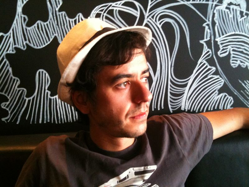

<div id="wrapper">
    <h1>Hi. I'm Sergi Mansilla</h1>
    <h2>and that on the right is a picture of me with a hat.</h2>

    <p>You just reached my personal site. Now that you are here, you could even take a look around.</p>

    <p>A few things about me:</p>
    <ul>
        <li>I work for <a href="http://www.tomtom.com">TomTom</a> making insanely great UI frameworks</li>
        <li>I am from Barcelona but I've been living in Amsterdam for a while</li>
        <li>Programming is my only superpower. It allows me to create.</li>
        <li>I prefer functional over OOP</li>
        <li>My tools of trade are vim, mac, JavaScript and ocaml</li>
        <li>I like <a href="http://en.wikipedia.org/wiki/Frikandel">Frikandels</a></li>
    </ul>
    <p>You can find me on any of those:<br/>
    <ul>
        <li><a href="http://www.sergimansilla.com/blog" title="Blog">Blog</a></li>
        <li><a href="http://twitter.com/sergimansilla" title="Twitter">Twitter</a></li>
        <li><a href="http://github.com/sergi" title="Github profile">GitHub</a></li>
    </ul>
</div>

